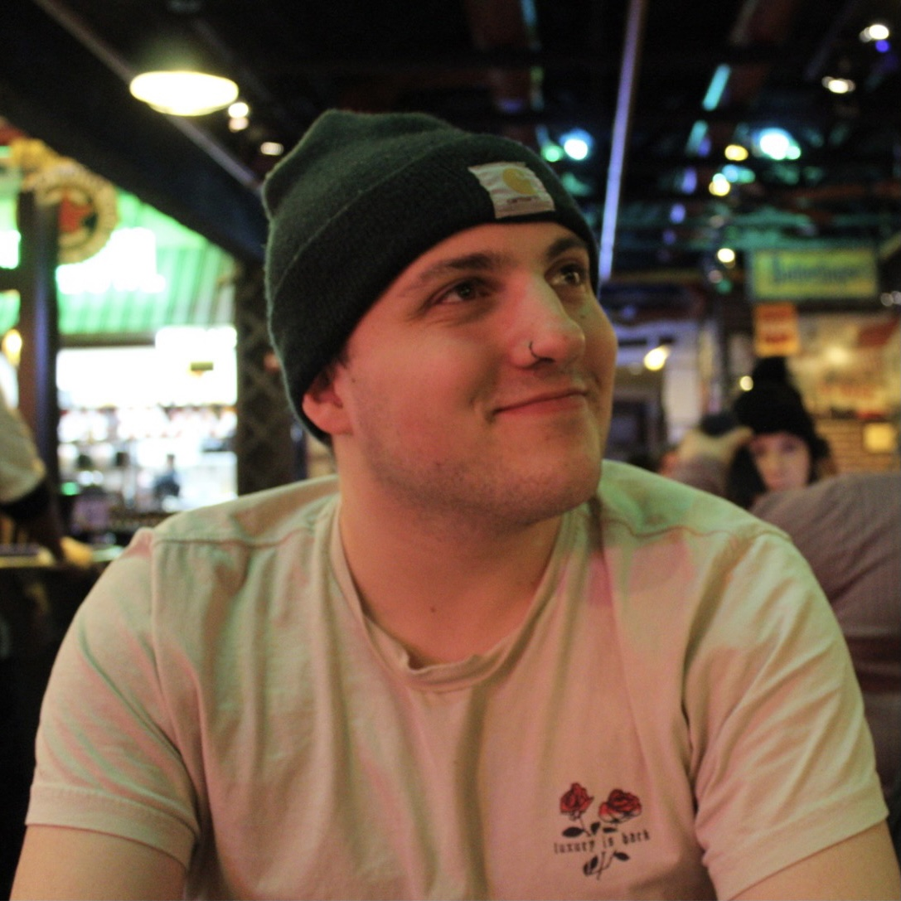

About Me

Hello, welcome to my portfolio! My name is Danny Wittig and I am a 26 year old aspiring web developer based out of Chicago, IL.
After graduating from the Illinois Institute of Technology in 2019 with a Bachelors of Science in Chemical Engineering, I spent a few years in the work-force at a chemical instrumentation company testing my skills in the industry to see what skills I liked and did not like utilizing in my day-to-day activities. I found that I loved the problem-solving and troubleshooting aspects of my job, but had a desire to use these skills to create something new, rather than sell something made.
This lead me to rediscover a topic that I had only briefly touched on during my undergraduate studies -- coding. I had little experience, but decided to do some research about the types of work that can be done with this. Web development immediately stood out to me as a field where you can use these various tools to create limitless new projects to solve the worlds problems.
This lead me to enroll in the Full Stack Web Development Coding Bootcamp through Northwestern University to begin my journey into this new field. What you will find in this portfolio is a combination of class work from this course, as well as some passion projects that will highlight my abilities and interests as a web developer and an enthusiastic creator.
Hover over the project images to see more information and click on them to navigate to the respective GitHub repository.